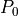

Thermodynamical functions (quanguru.QuantumToolbox.thermodynamics)¶
Contains methods to calculate certain quantities used in thermal states, open systems, and quantum thermodynamics. TODO update docstring examples and write some tests after writing some tutorials
Functions¶
|
Calculates average excitation number of a bosonic field with frequeny |
|
Returns the polarisation of a qubit with frequency |
|
Calculates the heat current due to given Lindbladian . |
- nBarThermal(angFreq: float, temp: float, hbar: float = 1.0, kb: float = 1.0) → float[source]¶
Calculates average excitation number of a bosonic field with frequeny
 at a temperature T.
Boltzmann and reduced Planck constants are by default .
TODO Physical constants’ default values should be connected to simUnits.
at a temperature T.
Boltzmann and reduced Planck constants are by default .
TODO Physical constants’ default values should be connected to simUnits.- Parameters
angFreq (float) – (angular) frequency of the bosonic field
temp (float) – temperature
hbar (float) – reduced Planck’s constant
kb (float) – Boltzmann constant
- Returns
Average excitation number
- Return type
float
- Raises
ValueError – If average number is infinite.
Examples
# TODO
- qubitPolarisation(freq: float, temp: float) → float[source]¶
Returns the polarisation of a qubit with frequency
in a thermal state of temperature T. and  are excited and ground state populations
satisfying , and thermal state populations also satisfy
.- Parameters
freq (float) – frequency of the qubit
temp (float) – temperature of the qubit
- Returns
qubit polarisation, i.e. difference betwennn ground and excited state populations.
- Return type
float
Examples
# TODO
- HeatCurrent(Lindbladian: Union[scipy.sparse.base.spmatrix, numpy.ndarray], Hamiltonian: Union[scipy.sparse.base.spmatrix, numpy.ndarray], denMat: Union[scipy.sparse.base.spmatrix, numpy.ndarray]) → float[source]¶
Calculates the heat current due to given Lindbladian . Here, is the system Hamiltonian, and the time derivative of density matrix is . It does not strictly speaking have to be a Lindbladian but any combination of terms from a Liouvillian. Disclaimer: physical meaning of those terms is not and cannot be interpreted by this function. TODO Write a bit of the theory here to better explain this function.
- Parameters
Lindbladian (Matrix) – a Lindbladian or any combination of terms from a Liouvillian
Hamiltonian (Matrix) – Hamiltonian of the system
denMat (Matrix) – Density matrix (state) of the system
- Returns
Heat current
- Return type
float
Examples
# TODO